Estimation, Confidence, and Simulation
How Well Can We Estimate Mean Age?
- Get in groups of 3
- Ask each other your age. Report the mean to me.
- Now get into another group of three, and do the same.
Firefly Flashing Frequency
From a sample of 35 fireflies 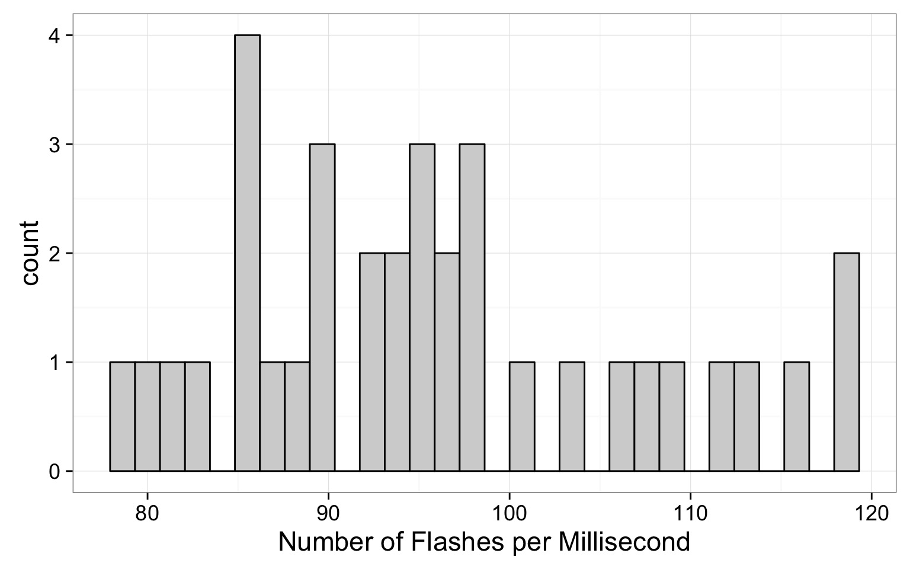
How Good are Population Estimates?
- Introduction to Simulation
- Determining Sample Size
- Confidence in our Estimates
What are computers best at?
Iteration!
Iterating in R: Old Skool For Loops
x <- 0
for (x in 1:100){
x <- x+1
}
x[1] 101Creation of Random Numbers
runif(100, min=50, max=500) [1] 190.89387 176.25599 118.63243 485.83678 111.04730 494.53942 264.64897
[8] 487.22288 83.68602 139.06495 469.42956 388.64767 220.51169 217.19700
[15] 373.65338 386.18910 485.53283 335.96225 361.45647 385.13480 493.01253
[22] 401.27532 157.19113 131.85486 498.18610 496.42744 179.59209 457.11463
[29] 412.31684 210.89412 88.03183 114.51248 384.99800 495.95735 104.99523
[36] 133.07635 438.17810 276.99112 93.24909 212.23181 203.13317 335.52296
[43] 288.80416 59.44128 468.57121 400.94012 372.72777 290.93984 70.29615
[50] 92.92981 73.77335 375.07841 436.46104 130.13121 449.73825 379.31745
[57] 383.06860 364.90164 97.24626 315.45178 181.12571 190.16395 131.22551
[64] 377.61358 176.28394 51.49367 288.54402 87.02868 133.32108 385.80073
[71] 237.95319 215.04260 119.45128 142.28658 215.82106 305.74634 380.92119
[78] 462.38345 451.13132 182.60253 270.96458 409.64673 259.18381 422.59475
[85] 173.85831 365.42595 288.97490 79.29357 164.87361 285.19891 216.97120
[92] 156.42073 493.03632 167.46891 493.12424 167.93765 359.06254 268.99307
[99] 64.05685 281.86993Fake Sampling
sample(1:100, size=50, replace=TRUE) [1] 54 32 74 6 66 43 96 17 61 17 84 64 41 46 58 58 37 77 39 32 47 52 87
[24] 42 93 75 57 42 10 2 9 62 54 41 95 56 31 89 2 1 23 79 44 7 62 83
[47] 86 67 33 85Combining Simulation and Iteration for Inference
- We can repeat simulations
- We can modify conditions for each simulation
- We can examine how simulated results differ
Example: Simulated Sampling
Example: Simulated Sampling With Differing Sample Size
How Good are Population Estimates?
1. Introduction to Simulation
2. Determining Sample Size
3. Confidence in our Estimates
Back to Fireflies
Our Mean Estimate
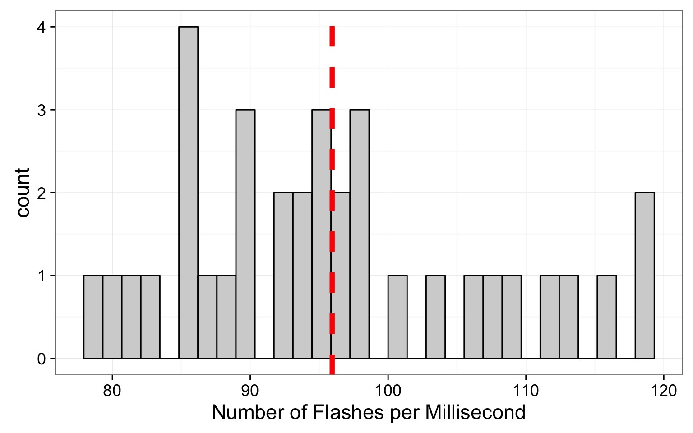
Sample Properties: Mean
\(\large \bar{Y}\) - The average value of a sample
\(y_{i}\) - The value of a measurement for a single individual
n - The number of individuals in a sample
\(\mu\) - The average value of a population
(Greek = population, Latin = Sample)
WAS OUR SAMPLE SIZE LARGE ENOUGH?
Two Simulation Approaches to Determine N
- Use the sample as a ‘population’
- Draw different sample sizes and estimate mean
- Estimate the mean and sd of our sample
- Assume a normal distribution
- Use mean and SD as population estimates
- Create simulated samples
Start With a Population…
Mean of Firefly flashing times: 95.9428571SD of Firefly flasing times: 10.9944982
So assuming a normal distribution…
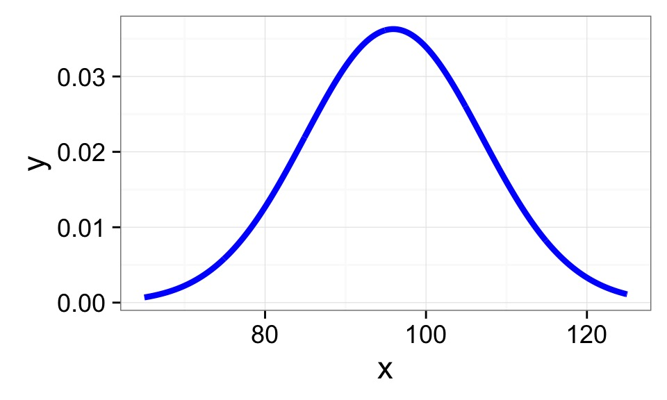
Choose a Random Sample - n=5?
Mean of Firefly flashing times: 95.9428571
SD of Firefly flasing times: 10.9944982
So assuming a normal distribution…
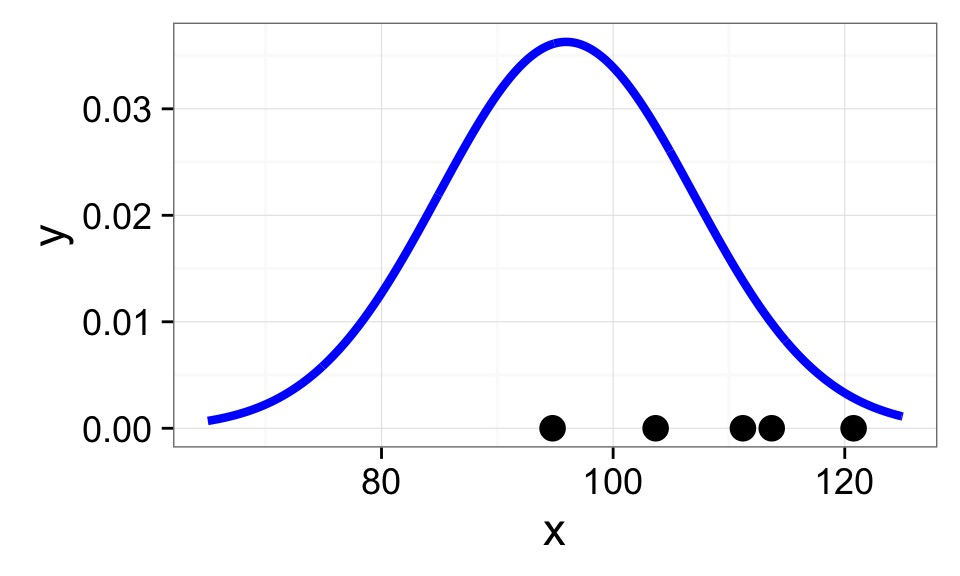
Calculate Sample Mean
Mean of Firefly flashing times: 95.9428571
SD of Firefly flasing times: 10.9944982
So assuming a normal distribution…
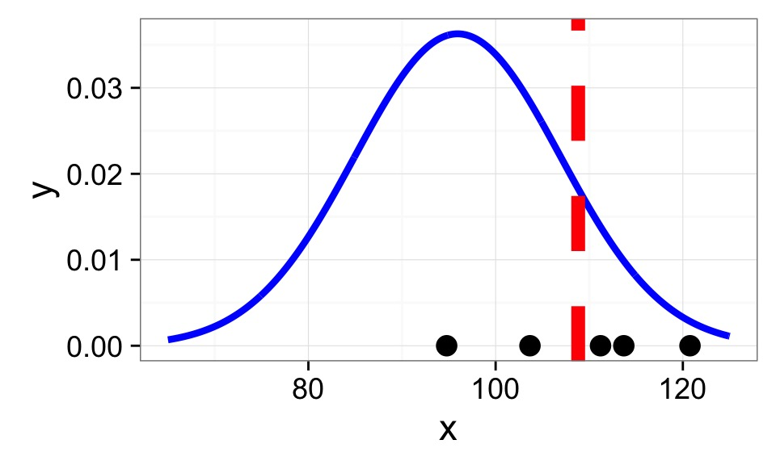
Rinse and repeat…
How Good is our Sample Size for Estimating a Mean?

Where does the variability level off?
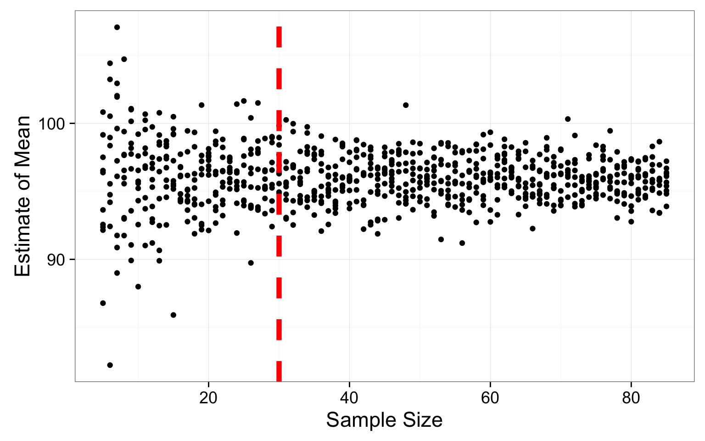
Where does the variability level off?
# A tibble: 81 x 2
sampSize mean_sim_sd
<int> <dbl>
1 73 0.7390990
2 23 0.7571298
3 46 0.9268731
4 51 0.9368759
5 63 0.9555057
6 74 0.9589096
7 85 0.9897979
8 81 1.0230904
9 79 1.0692790
10 82 1.0734958
# ... with 71 more rowsApproach 2: Sample from the Population
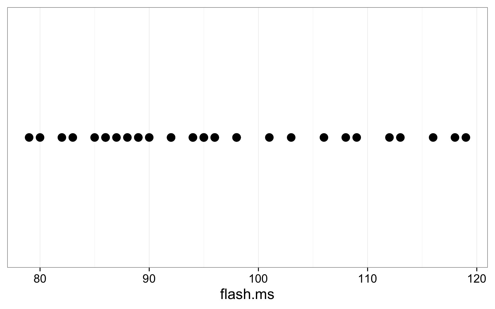
Sample from the Sample, n=5
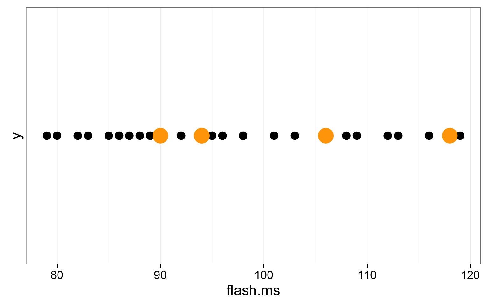
WITH replacement
Calculate Mean, n=5
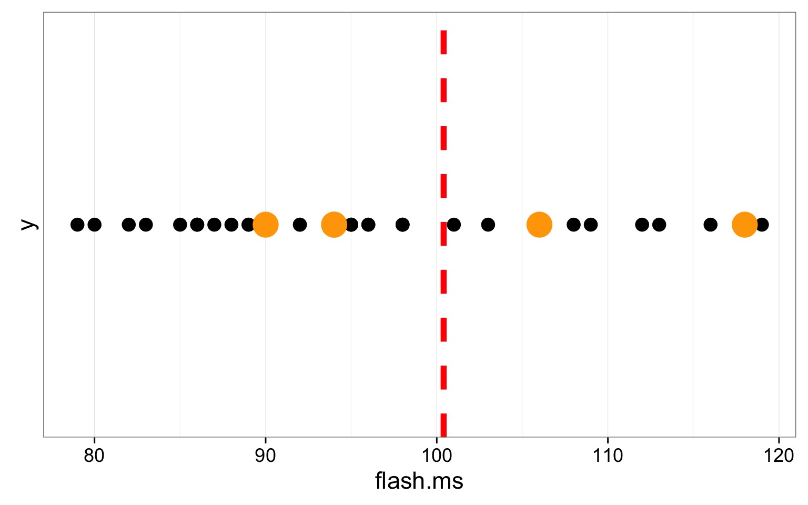
Rinse and Repeat
Resulting Sample Size Suggestion
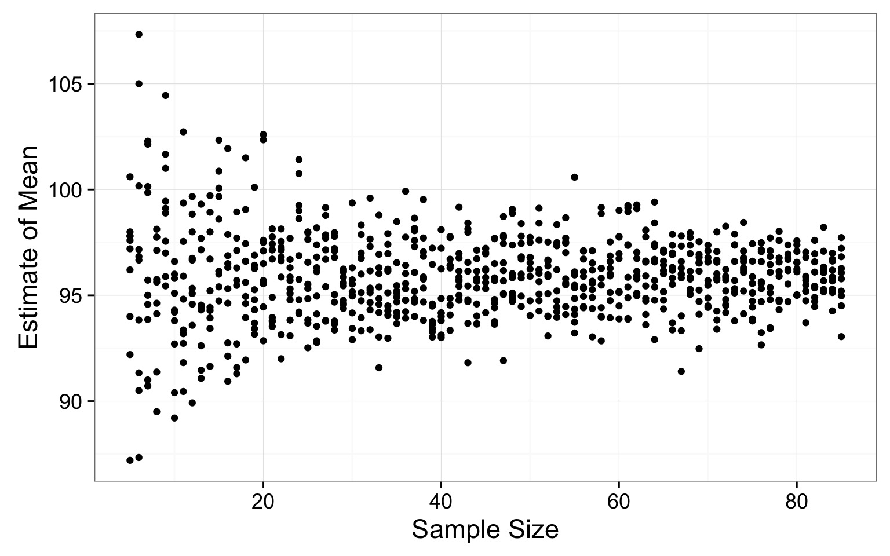
Where does the variability level off?
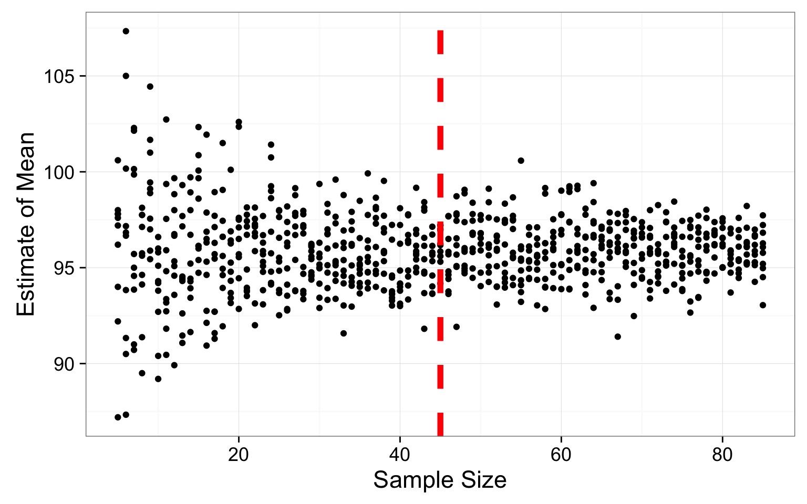
Where does the variability level off?
# A tibble: 81 x 2
sampSize mean_sim_sd
<int> <dbl>
1 73 0.7390990
2 23 0.7571298
3 46 0.9268731
4 51 0.9368759
5 63 0.9555057
6 74 0.9589096
7 85 0.9897979
8 81 1.0230904
9 79 1.0692790
10 82 1.0734958
# ... with 71 more rowsSO - how do you determine sample size for a parameter
- Take an initial sample or assume a distribution
- Take simulated draws of varying sample size
- A lot.
- Look for where variability in population parameter estimate levels off
This works for mean, sd, skew, median, quantiles, etc…
How Good are Population Estimates?
- Introduction to Simulation
- Determining Sample Size
- Confidence in our Estimates
Even with n=80, Variability in Mean Estimate
How variable is our estimate of a population parameter?
- We can resample our sample some number of times with replacement
- This resampling with replacement is called bootstrapping
- One replicate simulation is one bootstrap
- We can calculate the Standard Deviation of the values of those simulations
- This is called the botstrapped Standard Error of the estimate
Standard Error = the Standard Deviation of a Population of Estimates of a Parameter
A Population of Standard Deviations
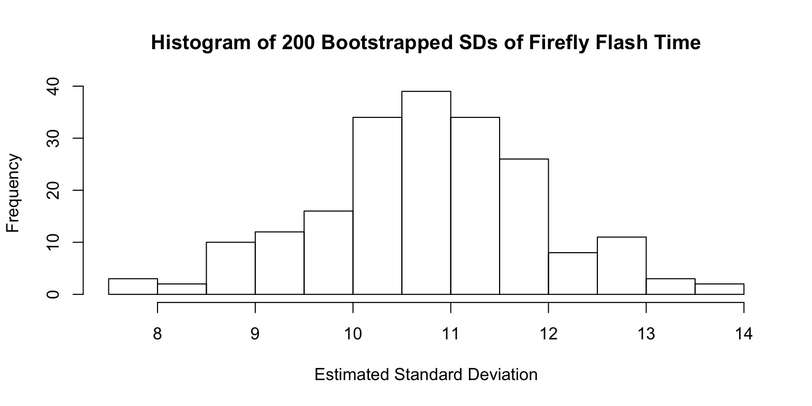
Estimated SD:10.77
SD of SD (i.e., Standard Error of Estimate of SD): 1.132
So I always have to boostrap Standard Errors?
Many common estimates have formulae, e.g.:
\[SE_{mean} = \frac{s}{\sqrt(n)}\]
\[SE_{mean} = \frac{s}{\sqrt(n)}\]
Means, Standard Deviation, and Standard Error
- A mean from a sample, m, is an estimate of a population mean, \(\mu\)
- A SD from a sample, s, is an estimate of the population SD, \(\sigma\)
- The Standard Error of the mean is the standard deviation of your estimate of a mean if you had many estimates
- The SE tells you how much you can trust your estimate
Describing Confidence with an Interval
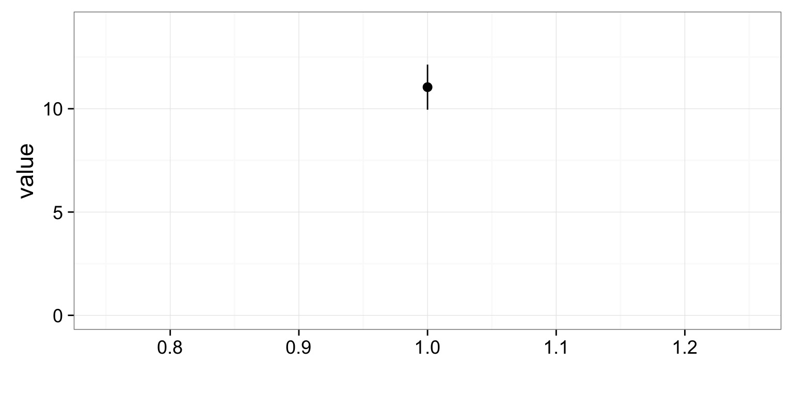
95% Confidence Intervals
- 95% CI \(\approx\) 2*SE (or 1.96, really….)
- The Confidence Interval is hugely misunderstood
- Describes the region where we are some percent confident that the true value of a parameter exists
- If you were to repeat this study 100 times, the CIs of 95 of the studies would overlap the true value
- If you were to repeat this study 100 times, the CIs of 95 of the studies would overlap the true value
- Fundamentally a Frequentist concept
- There is a ‘true’ value, and if you were to repeat this study the same way, how often would you overlap it?
Replicated 95% Confidence Intervals
100 simulations drawing from the same population
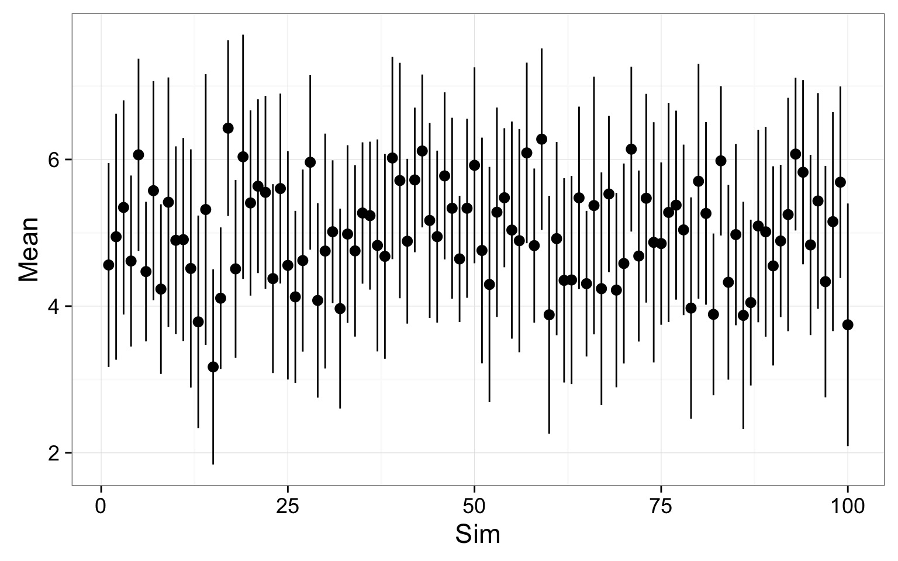
Replicated 95% Confidence Intervals
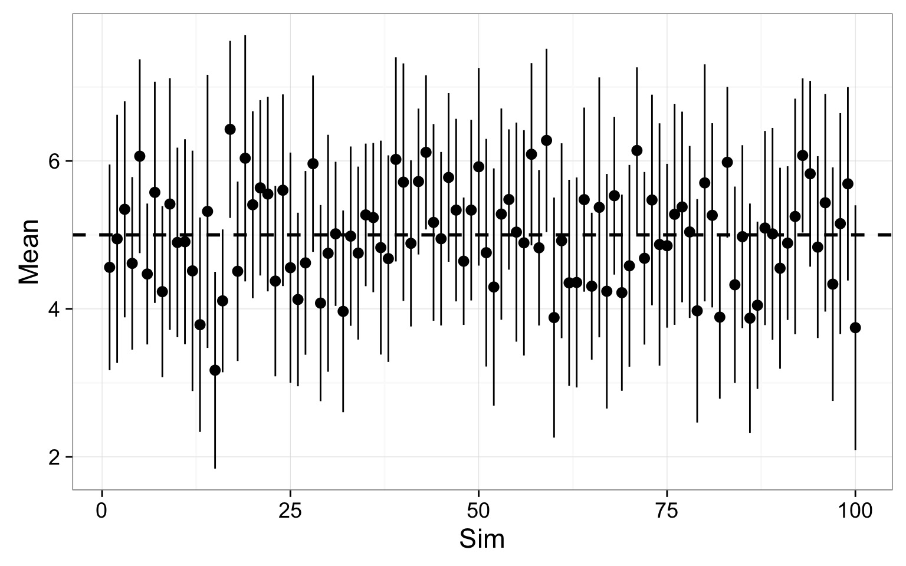
Replicated 95% Confidence Intervals
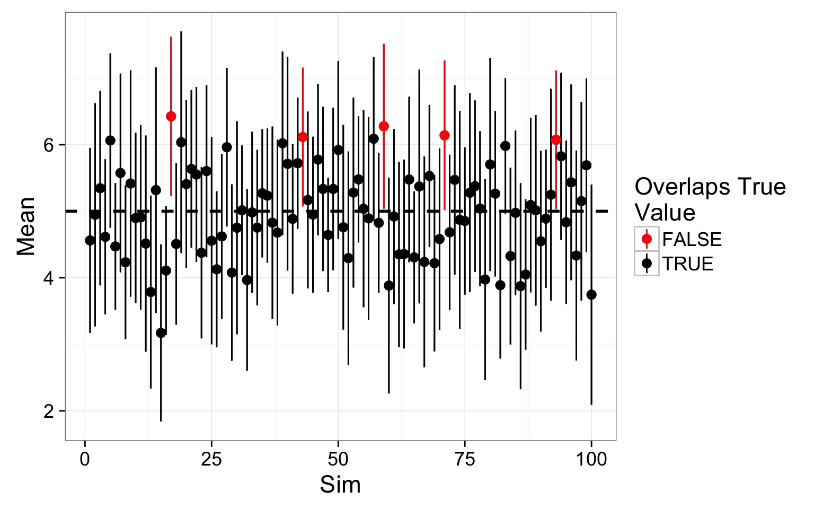
OK, What Am I to Make of This?
- Fancy-pants statistics would never have been invented if we had computers that could just do simulations in the 1900s
- We can only estimate population parameters from sample
- There is always uncertainty in our estimate
- Is it quantifiable
- Is it quantifiable
- We can derive estimates of uncertainty via simulation or use available formulae